Bridge of Sighs
Ponte dei Sospiri

OTIUM is the practice of deliberate leisure. In the classical sense, otium is not escape from work but time when attention returns to memory, landscape, and thought — without a utilitarian deadline.
We shape routes for lingering, not for checklist tourism. The goal is presence in a place rather than consumption of sights.
OTIUM is not a tour operator. It is an invitation to walk, pause, and leave a route unfinished if the light on a façade deserves another minute.
City symbols
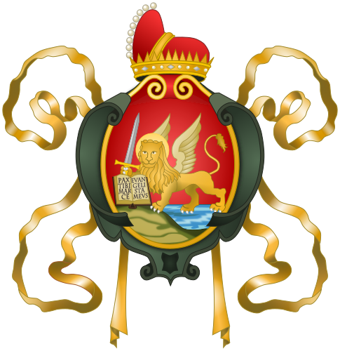
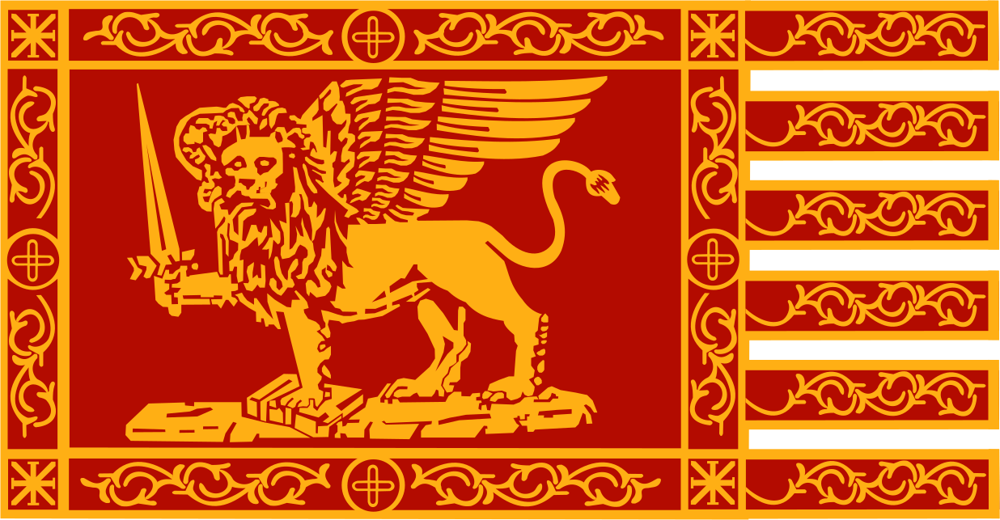
Guide. Places in this edition: 20.
Ponte dell'Accademia
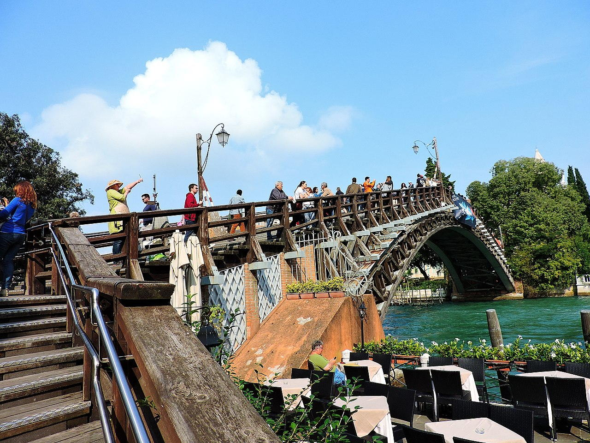
Ponte dei Sospiri
Isola di Burano
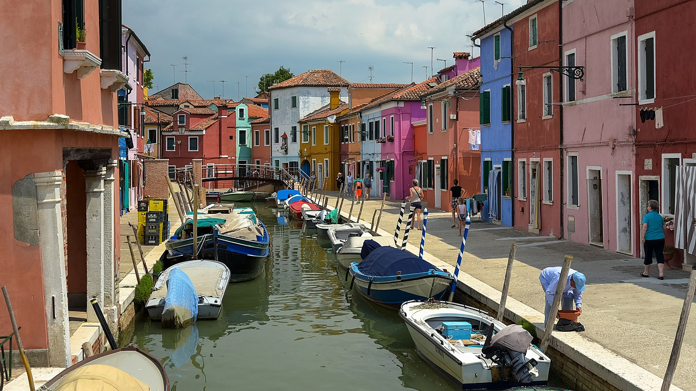
Ca' d'Oro

Palazzo Ducale

Canal Grande
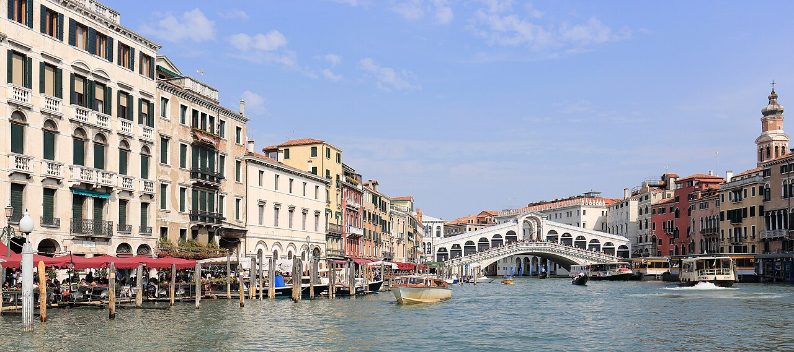
Museo Ebraico di Venezia

Teatro La Fenice

Lido di Venezia

Biblioteca Nazionale Marciana
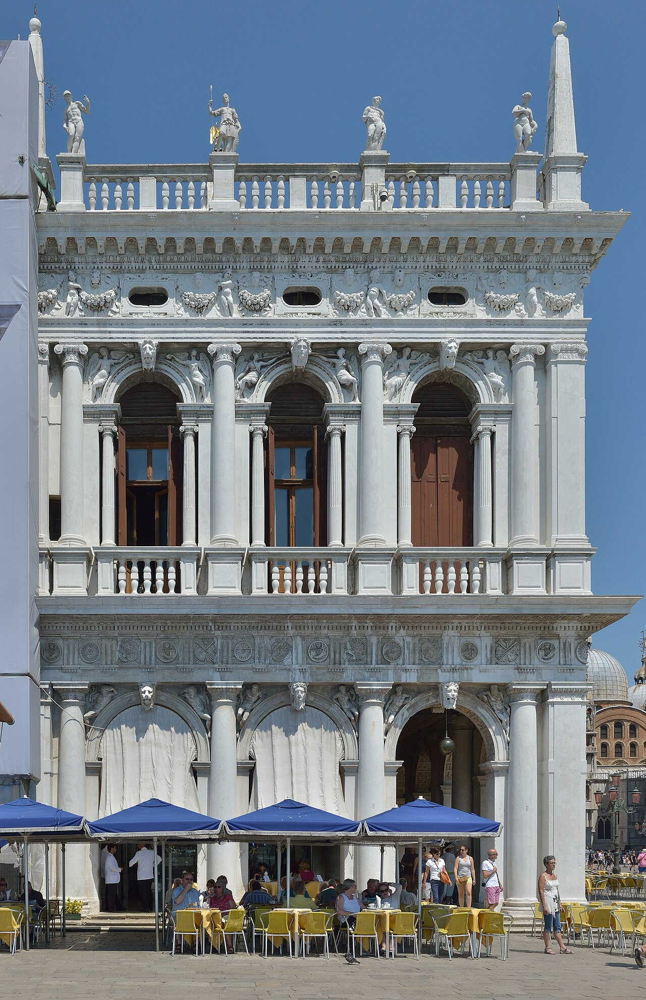
Isola di Murano

Scala Contarini del Bovolo

Collezione Peggy Guggenheim
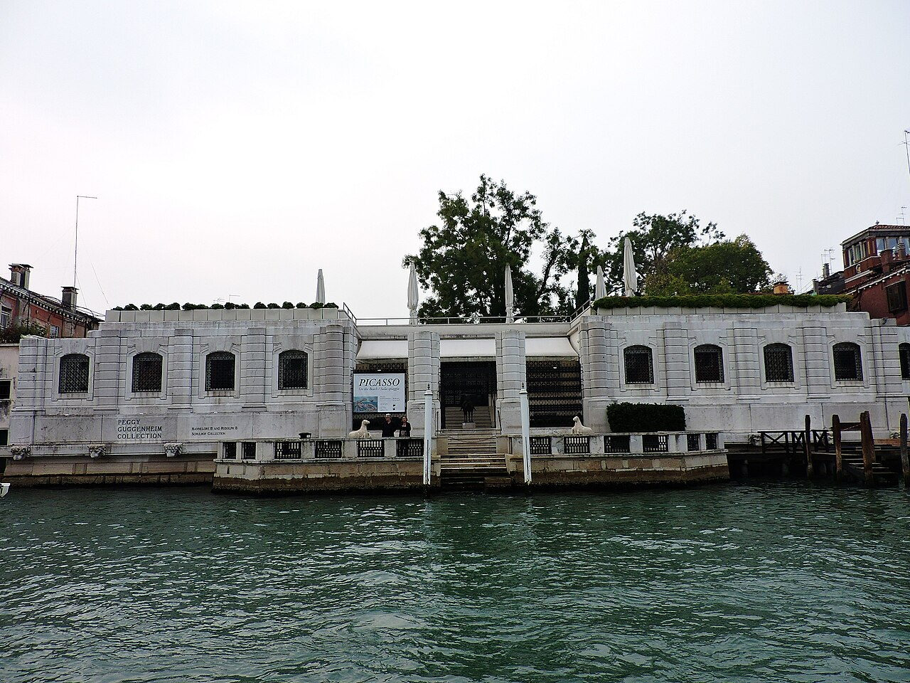
Piazza San Marco
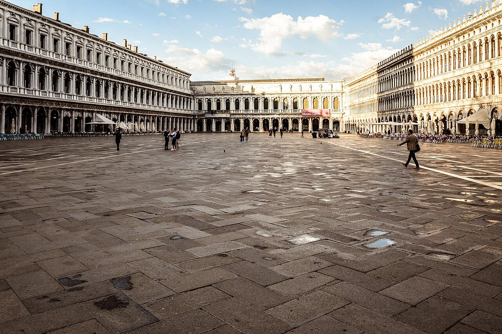
Ponte di Rialto
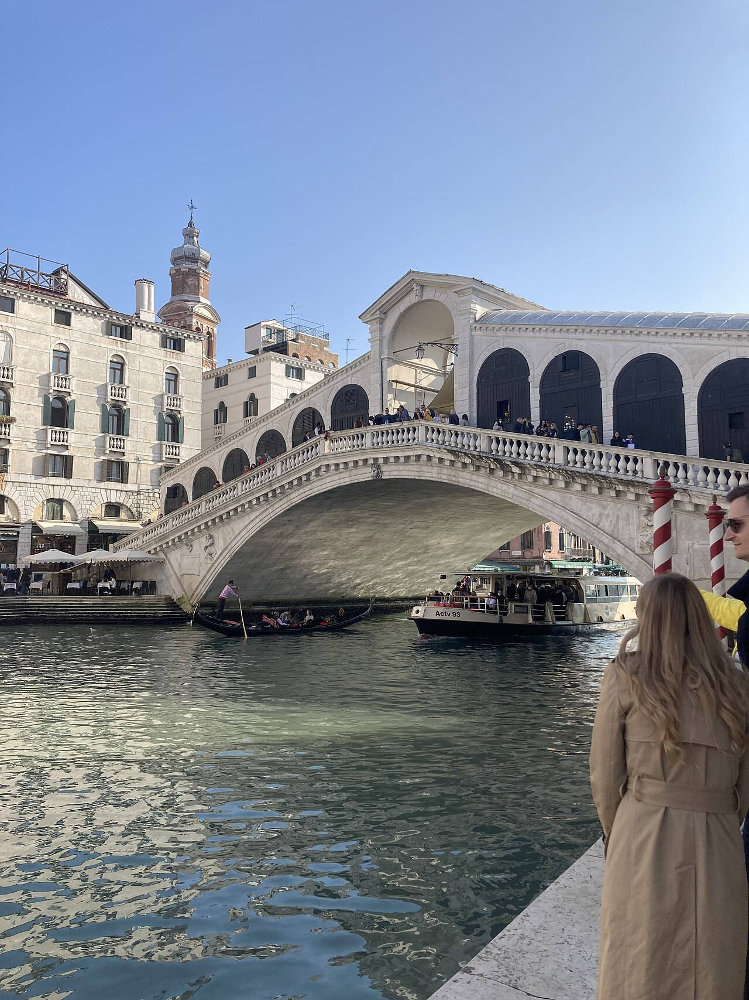
Basilica di Santa Maria della Salute
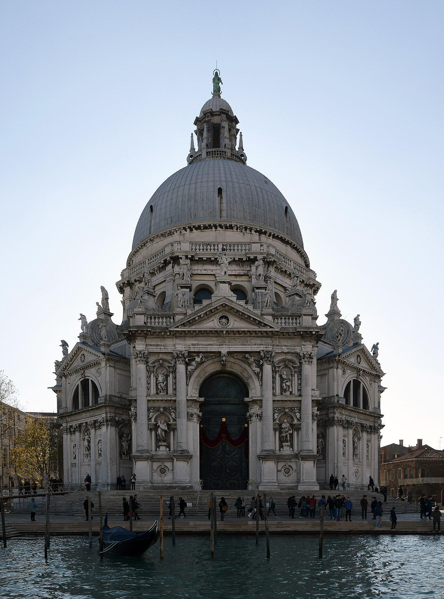
Basilica di San Marco

Campanile di San Marco
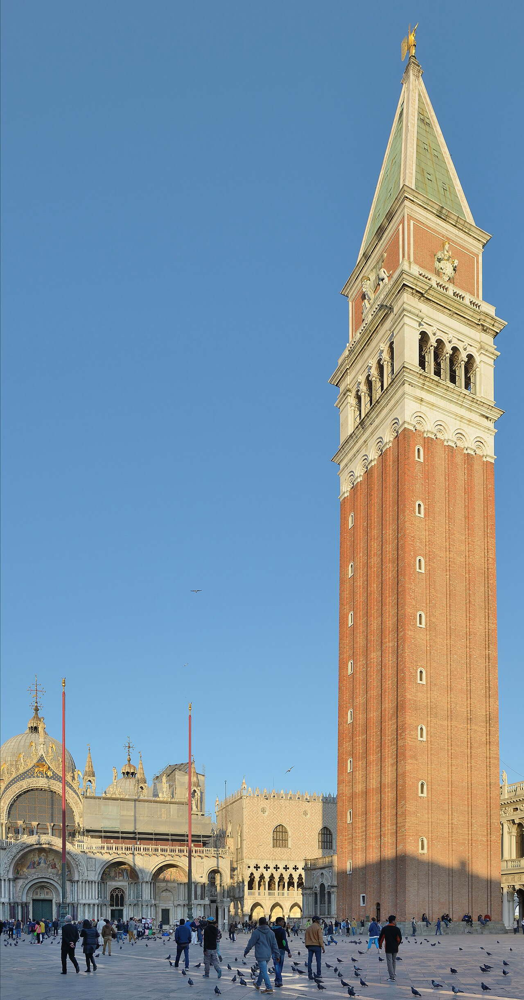
Torre dell'Orologio

Arsenale di Venezia